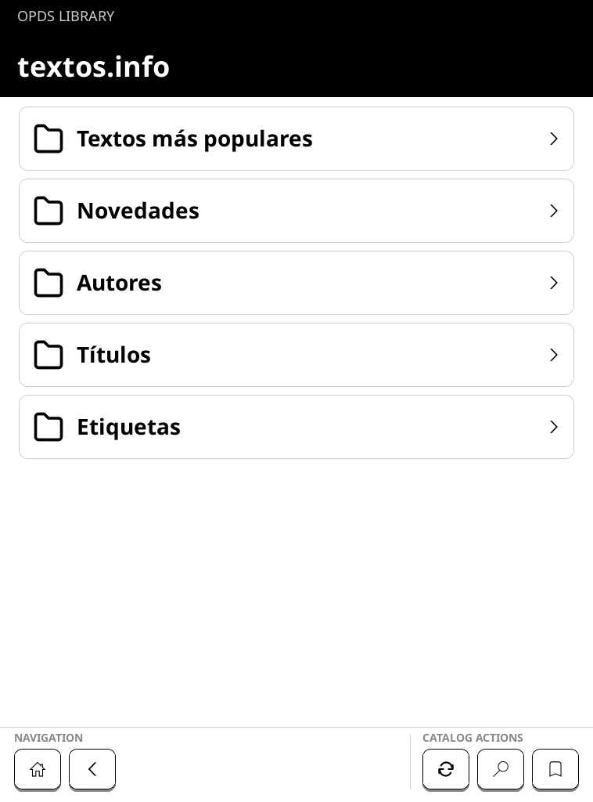
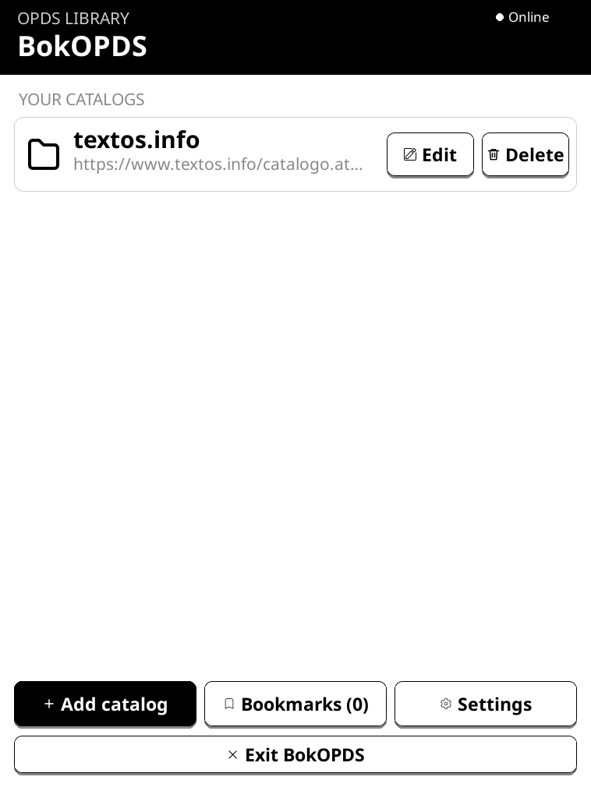

Browse & search
OPDS 1 Atom and OPDS 2 JSON, pagination, full catalog paths, and search discovery.
Focused e-reader software
Browse, search, bookmark, and download from OPDS catalogs directly on a Kobo e-reader. No separate launcher. No full reading suite.
Free and open source · AGPL-3.0-or-later

Actual emulator capture · live public OPDS data
01 / COMPATIBILITY
Physically tested: Kobo Elipsa 2E, family ID 389, firmware 4.38.23697.
The package only activates on allowlisted hardware and firmware. Other combinations are not guaranteed until someone tests and reports them.
Check the device table02 / THE SHORT LIST
OPDS 1 Atom and OPDS 2 JSON, pagination, full catalog paths, and search discovery.
Bookmark any catalog location and return with its parent path intact.
Select books across pages, choose a save folder, and import completed files into the stock library.
Large touch targets, page-based navigation, cancellable requests, autosuspend, and a multilingual keyboard.
03 / ON SCREEN
These are real BokOPDS emulator captures using the public textos.info catalog included in KOReader’s default OPDS list. No sample titles or mock catalog data.

Catalog content and covers shown belong to their respective authors and providers. BokOPDS is not affiliated with textos.info.
04 / INSTALL
Installing a system archive modifies your reader. Back up important books and settings, charge the device, and do not interrupt an update.
Match the exact model and firmware in the compatibility table.
Get KoboRoot.tgz and SHA256SUMS from the same release.
Place the archive in .kobo, safely eject, and let the reader apply it.